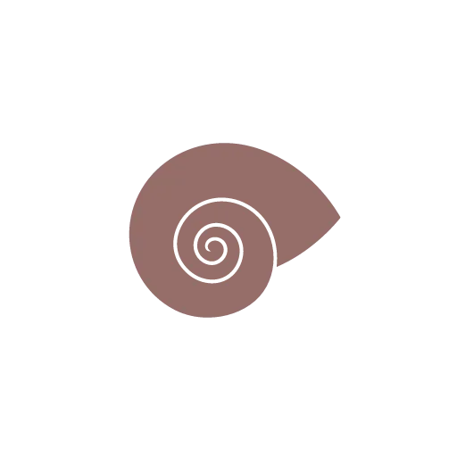
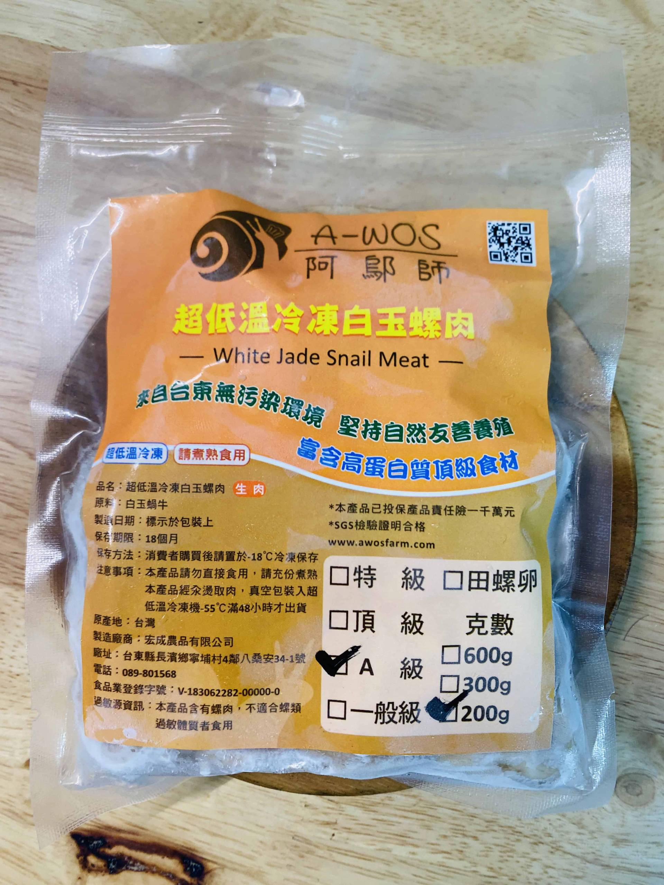
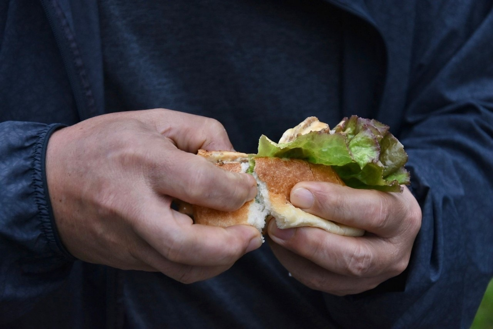
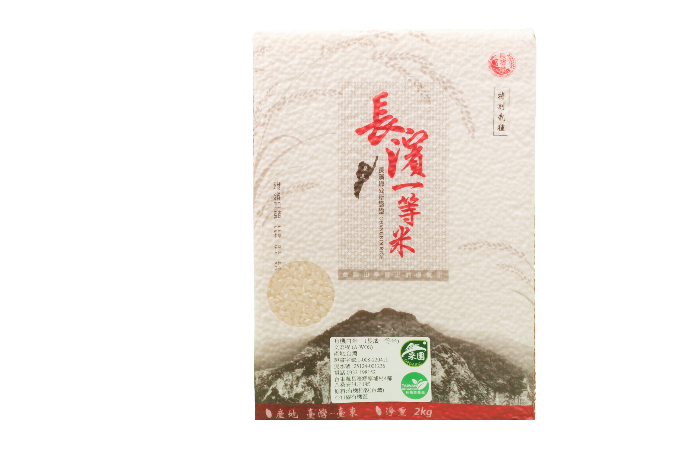
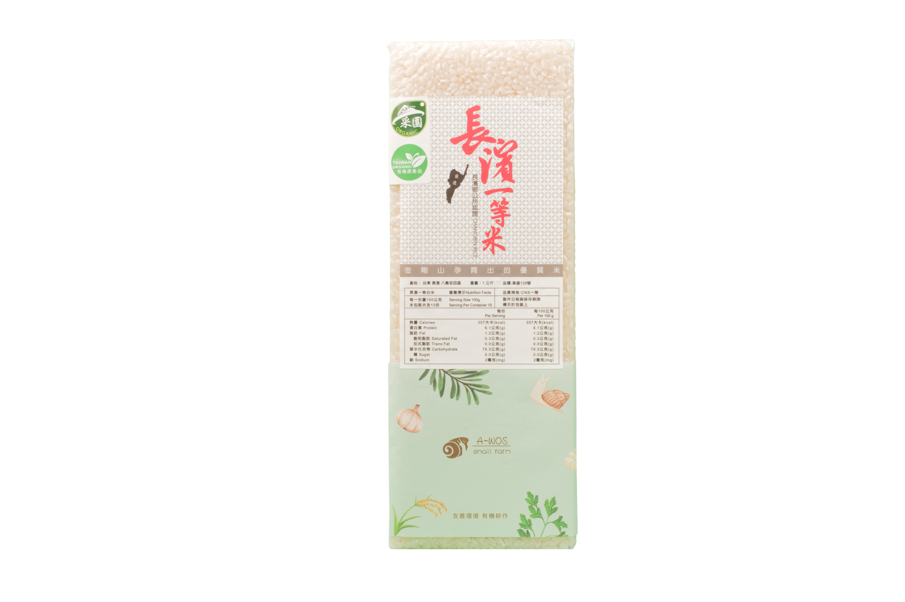
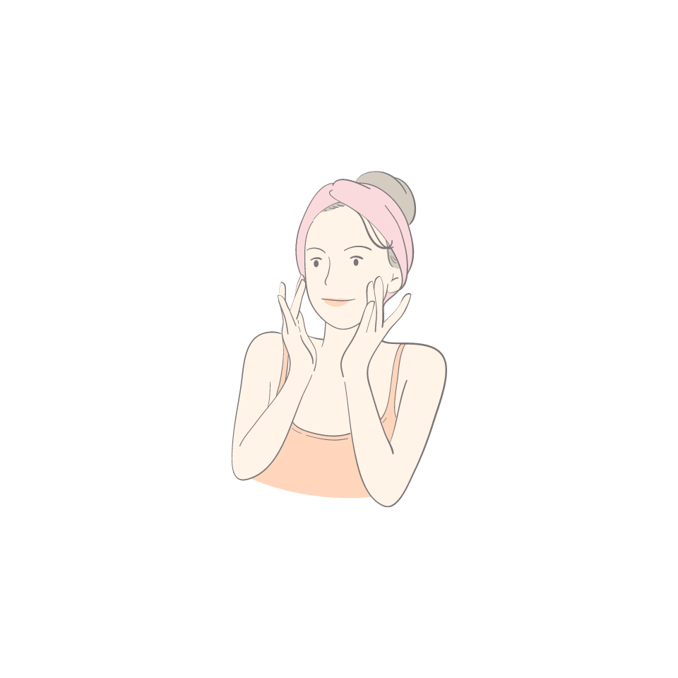
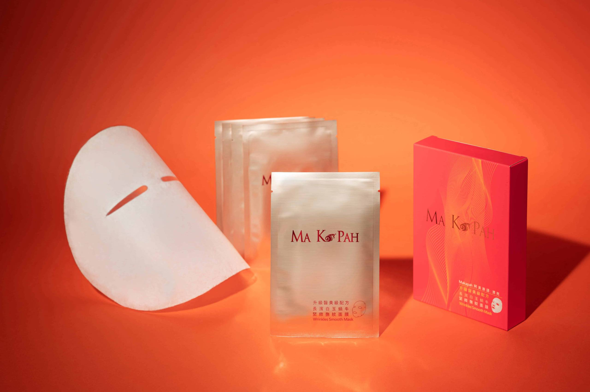
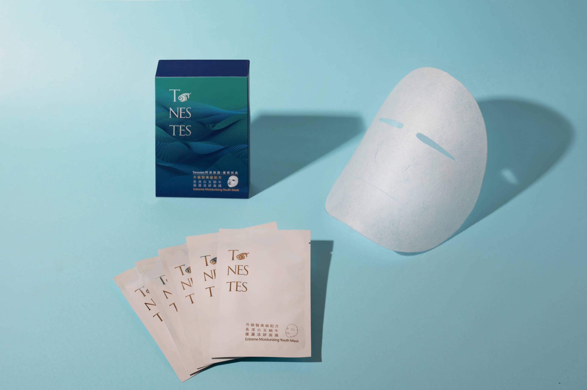
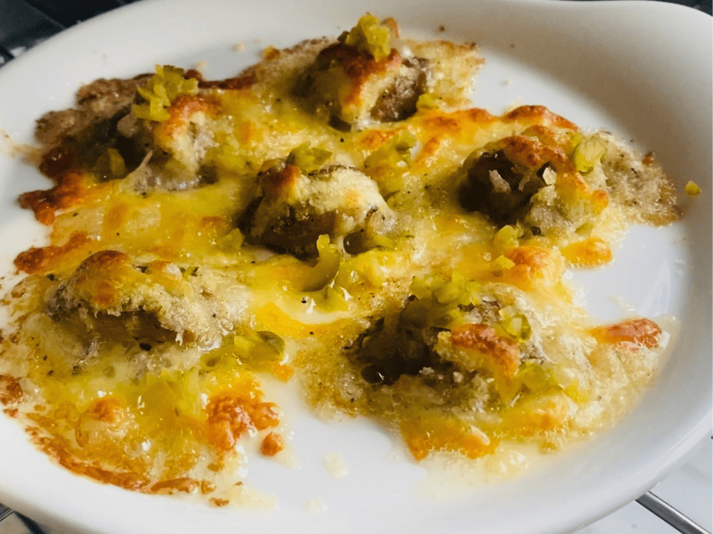

特級限定八桑安(蝸)牛(特級)
約 55 顆/斤・僅供餐廳等級採購
米其林主廚指定選用。飼以青木瓜、南瓜與有機米糠，螺肉純淨白皙、豐厚彈牙。

特級限定約 55 顆/斤・僅供餐廳等級採購

熱銷首選約 70 顆/斤・真空冷凍包裝
約 90 顆/斤・真空冷凍包裝
長濱在地自烘手作麵包夾入秘製白玉螺肉，產地直送的無可取代鮮味。

太平洋水氣與金剛山泉水灌溉，高雄 139 品種一等良質米，米粒飽滿Q彈。

高雄 139 品種・箱裝純淨天然產地直送

高雄 139 品種・真空 1 公斤袋裝方便品嚐
八桑安天然白玉蝸牛萃取原液，富含天然多醣體與膠原蛋白，深層修護滋養肌膚。

白玉蝸牛萃取原液・滴滴晶純深層滲透

密集緊緻彈潤配方・修護撫平細紋

高效玻尿酸與天然蝸牛萃取結合・長效鎖水透亮
五分鐘快速上桌的星級風味，居家聚餐、小酌微醺的絕佳良伴。

200克・嚴選鮮香醬汁與厚實螺肉，加熱即食
2018 年，青年文宏程返鄉回到長濱八桑安部落，在太平洋畔展開這場白玉蝸牛的友善耕作旅程。
「AWOS」在阿美族語裡，正是蝸牛的意思。
我們敬畏土地、慢火細熬，只為呈現純淨優雅的台灣頂級風土滋味。